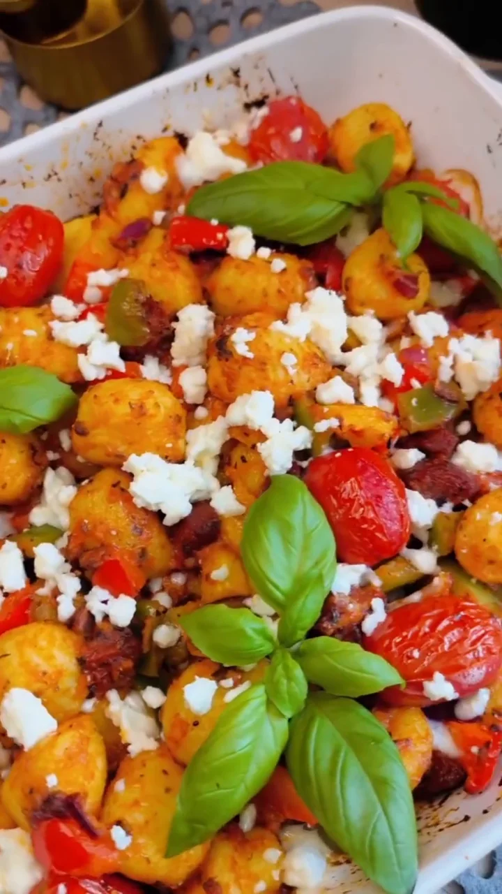

Chorizo-Gnocchi-Auflauf
Wenn es schnell gehen soll, aber trotzdem richtig lecker sein muss, ist dieses Rezept genau das Richtige. Würzige Chorizo, zarte Gnocchi, frisches Gemüse und cremiger Feta machen diesen Auflauf zum perfekten Feierabendessen.
- 10 Zutaten
- 5 Schritte
Zur Zubereitung Video ansehen ↗
Zutaten
Zubereitung
- Gnocchi, rotes Pesto, Gemüse, Chorizo, Kräuter und etwas Öl in eine Auflaufform geben.
- Alles gründlich vermengen.
- Bei 200 °C für 20 Minuten abgedeckt backen.
- Anschließend weitere 10 Minuten ohne Abdeckung backen, bis alles schön goldbraun ist.
- Mit zerbröseltem Feta und frischem Basilikum toppen und servieren.